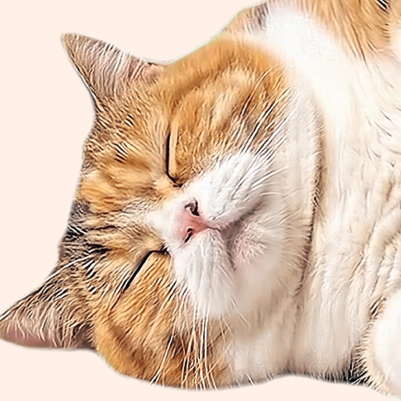

I installed it on one computer, and now it shows up on all my PCs. My social media life is better at home and at work (^^)/
Official Browser Extension
Cat Gatekeeper
At the time you set, a cat appears and blocks the screen
For social media habits, choose a chubby cat
Reactions
WHAT'S NEW
May 18, 2026: A new cat has been added!
Note: Cats appear at random.
Note: If you already have the extension installed, it may take several hours to about a day for the new cat to appear depending on the store and browser auto-update timing.
Important
Please install Cat Gatekeeper only from the official links on this site. An unofficial listing using the Cat Gatekeeper name and official materials has been reported to Mozilla.
Past updates
May 12, 2026: Firefox extension released
Cat Gatekeeper is now available on Firefox Add-ons.
May 6, 2026: Browser extension - custom sites added (v1.1.4)
Note: Tracking may reset on sites with frequent page changes or reloads. Cat Gatekeeper works best on social media and video sites where you stay on the same service for a while.
Note: To show the cat on custom sites, you will need to allow the new permission.
Note: If Cat Gatekeeper does not work after an update, please reload the target site once.
May 1, 2026: Official website launched
The official Cat Gatekeeper website is now available.
April 26, 2026: Chrome extension released
The official Chrome extension version of Cat Gatekeeper is now available.
New Cats
New cats


Which one?
HOW TO
Choose sites
Select the sites you want to limit.
Social media / Video sites / Custom sites
Set the time
Set when the cat appears
and how long it stays.
Switching tabs resets the timer.
Take a break
The cat takes over the page
until the countdown ends
You can also open the menu and dismiss it.
PRIVACY
No ads
No tracking tools are used
No data
No browsing or social media data
is collected
is collected
Browser only
Settings stay on your device
Q&A
Which sites does it work on?
You can add custom sites. Tracking may reset on sites with frequent page changes or reloads. Cat Gatekeeper works best on social media and video sites where you stay on the same service for a while.
Is it free?
Yes. Cat Gatekeeper is free to use.
Why is Cat Gatekeeper free?
Making it paid would take time not only to build, but also to manage and support afterward. I would rather spend that time improving this project and turning even more new ideas into real things, so I decided to offer Cat Gatekeeper for free. Enjoying it? Your support would mean a lot.
Why is site access needed?
It needs site access to show the cat break screen on the sites you choose. Cat Gatekeeper does not collect, sell, or transmit your browsing history or page content. Your settings are stored in your browser.
Can I change the timer?
Yes. You can change it from the extension menu.
The cat does not appear.
If you switch tabs or use sites with frequent page changes or reloads, tracking may reset easily. Cat Gatekeeper works best on social media and video sites where you stay on the same service for a while. It may also be conflicting with another extension, so if needed, turn off other extensions and test it again.
Where can I open the menu?
You can open it from the extension icon near the address bar in the top-right of your browser.
Can I dismiss the cat?
Yes. Open the extension menu and press the dismiss button.
Which browsers are supported?
Cat Gatekeeper currently supports Chrome and Firefox. Other browsers are also under consideration.
Are the cats real?
They are ideal cats created one by one with the help of AI, carefully adjusted to become the ultimate lovable distraction. They are not real cats, but I’m very confident in their cuteness. Please treat them kindly as little gatekeepers for your desk.
Can I use the assets in the extension?
You are very welcome to share screenshots or posts about Cat Gatekeeper. Please do not use or redistribute the image or video assets themselves.
Will new cats be added?
Yes. More cats are planned for future updates.
Support